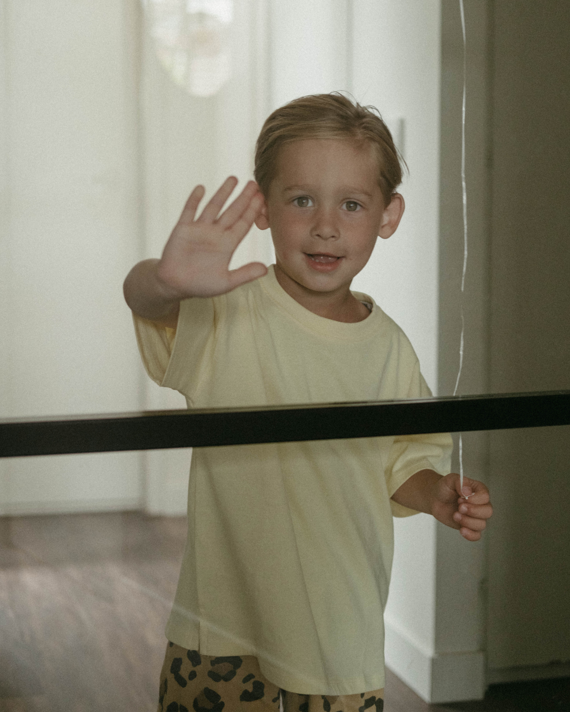
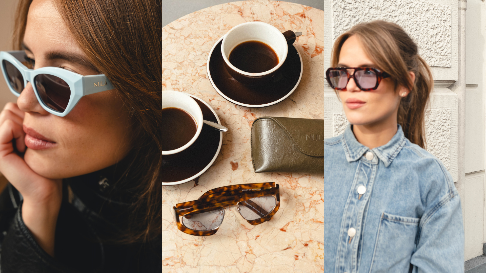

MATERNITY

BRANDS
BRAND SHOOT
Freelancer for photography and socials
Ik creëer beelden met karakter, gevoel en een frisse blik. Elk merk, product en persoon verdient beelden die authentiek voelen, opvallen en een blijvende indruk achterlaten.
BOOK HERE